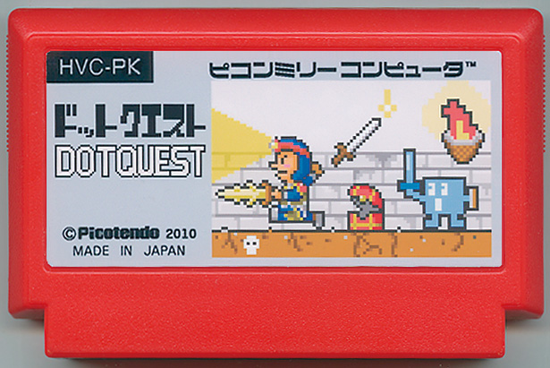

「 ドットクエスト 」
ピコサル／定職求職中
「色(エレメント)」が「力」である世界。魔王城に行った「多彩(才)なる勇者」は魔王に敗れ、呪いによって単色の貧弱ドット絵モンスターにされた。そんな時、城に謎の男が侵入してきた。勇者は男の後を付け、彼が捨てるアイテムや装備品から「色」を獲得していく。更にその「色」から新たなアイテムを作り、「本来の勇者の色」を集めながら最上階の魔王を目指す。果たして、勇者は元の姿に戻り、魔王を倒せるのか？ そして、謎の男の目的とは？